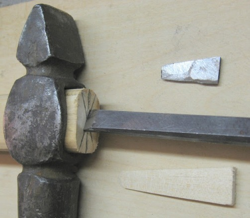
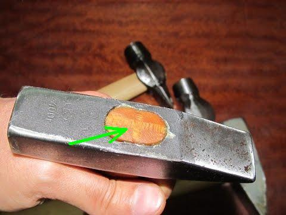
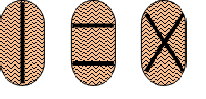
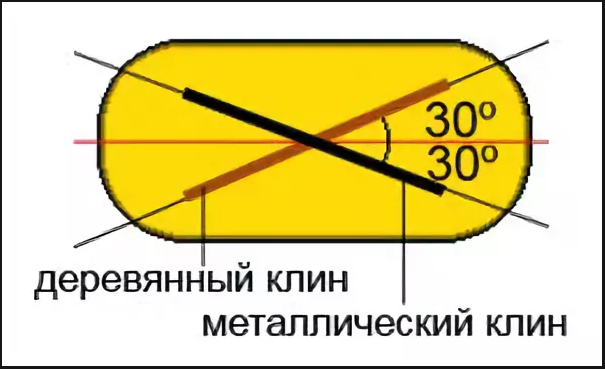
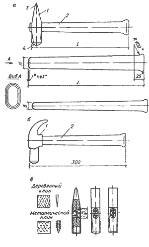
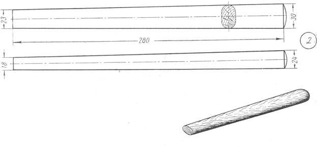
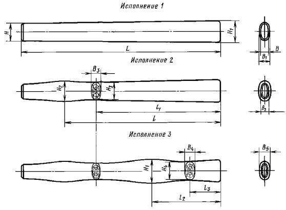
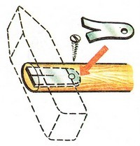

Чтобы крепление было надежным, нужно в первую очередь подобрать ручку к молотку из крепкого и сухого материала. Вполне подойдет для этого кизил, акация, береза... Себе, к примеру, я сделал ручку из старой хоккейной клюшки - служит уже больше 15 лет, не болтается и нет ни сколов ни трещин.
Отверстия под рукоятку в молотках есть двух видов:
В купленных молотках чаще всего вбит металлический клин по продольной или поперечной оси молотка - такое расклинивание не эффективно, так как разжимает древесину только в одной плоскости.
Будет более эффективно забить клин по диагонали, тогда расклинивание будет в двух плоскостях.
Для того, чтобы соединение рукоятки с молотком было максимально надежным, заготавливаем два клина: деревянный и металлический. Деревянный клин изготавливаем из того же дерева, что и сама рукоятка. Размер клина: толщина - 2-3мм, ширина - около 15мм, длина - 40-50мм. Металлический клин вырезаем из пластины толщиной 2-3мм, длиной - около 20мм. Переднюю часть клиньев затачиваем, чтобы они плавно утолщались к хвостовику.
В торце забитой рукоятки узкой стамеской, шириной 15-20мм, делаем под углом 30-45 градусов не глубокую (около 5мм) насечку.

Для того чтобы клин плавно входил и "намертво" держался смазываем его ПВА или силиконом. Забиваем сначала деревянный клин сантиметра на 2 в рукоятку, а оставшуюся часть отпиливаем ножовкой по металлу - мелкий зуб не рвет древесину.
Теперь по другой диагонали делаем насечку и забиваем металлический клин.
Если для рукоятки вы взяли сухую древесину, то такой способ расклинивания будет иметь "самую высокую надежность при работе".
автор вопроса выбрал этот ответ лучшим
в избранное ссылка отблагодарить
Ким Чен Ын [508K]
5 лет назад
Головка молотка (отверстие) и размер входной части ручки молотка должны быть подобраны так что бы ручка входила в отверстие "внатяг", а не свободно и легко.
Если ручка "болтается" то нужно подобрать другую, если входная часть чуть больше, можно доработать напильником.
Ножовкой по металлу (полотно тонкое, подходящее у неё) делаем пропилы в ручке молотка, я чаще делаю крест на крест,

но есть и другие варианты.


Вставляем ручку в отверстие, резко и сильно торцовой нижней частью молотка бьём об жёсткую поверхность (наковальню, к примеру, или об пол), таким образом насаживается головка молотка на ручку.
Далее определяемся с материалом изготовления клина, это может быть дерево твёрдых пород, может быть металл, иногда используют два клина сразу, один деревянный другой металлический.
Всё, осталось вбить клинья.
Если клинья деревянные, то в начале вбиваем, затем подрезаем их заподлицо с торцевой частью ручки молотка, металлические вбиваются сразу заподлицо.
Ещё бы посоветовал промазать деревянные клинья клеем, к примеру столярным, или ПВА.
В целом изделие не сложное, можно что называется изготовить "на глаз", но всё же лучше учитывать важные моменты:
Длина и толщина ручки молотка подбирается с учётом веса молотка без ручки, то есть чем тяжелей "головка" молотка тем длиннее и толще должна быть ручка.
Ещё лучше иметь перед глазами чертёж ручки.

Далее подбирается заготовка (брусок размерами чуть больше готового изделия, по длине с запасом в 4-е см, по ширине и толщине примерно на пол см запаса).
Древесина должна быть сухая, желательно из твёрдых пород, к примеру не плохой вариант это ясень, бук и.т.д.
Согласно чертежу разметка заготовки.
Далее вырезаем по разметке.
Далее выстругиваем рубанком заготовку.
Осталось придать ручке овал (закруглить грани, другими словами, можно стамеской)) и подогнать размер узкой части рукоятки к отверстию молотка.
Отпиливаем те самые припуски (запас) по длине) и примерить заход ручки в молоток, если есть лишнее, размечаем где и окончательно подгоняем.
"Головка" молотка должна плотно насаживаться на ручку.
На финише зачистить ручку молотка наждачной бумагой, насадить ручку на молоток и забить клин (смотрите уже по месту клин может быть и деревянным и металлическим, если деревянный, то подбирайте древесину, ещё более твёрдой породы чем использовали для изготовления ручки).
Можно ручку проолифить, или вскрыть лаком, если олифить, то олифа лучше натуральная (льняная к примеру), перед нанесением олифу разогревают, наносить лучше два слоя минимум с просушкой.
Elden [97.6K]
7 лет назад
Наверное 90% ручки молотка при эксплуатации зависит от того, какой материал использовали при её изготовлении, так как он должен быть достаточно прочным, ведь используется в инструменте, который в прямом смысле ударяет по другим.
Итак сначала надо найти материал для изготовления рукоятки, это такие проды дерева, как:
Эти 7 пород дерева идеально подходят для рукоятки молотка.
Дерево должно быть хорошо высушено, на нём не должно быть сучков, гнилых или испорченных мест и трещин.
Далее надо определиться с толщиной и длиной рукоятки. Для стандартного молотка в 400 грамм длина используется в пределах 28-35 сантиметров, а толщина 24-30 миллиметров с одной стороны и 18-23 миллиметров с другой, в зависимости от отверстия в бойке.

Итак замеряем отверстие в бойке и изготавливаем с помощью рубанка рукоятку овальной формы по вышеприведённым размерам для 400 граммового молотка или другого размера в зависимости от веса бойка.
Форма ручки может быть не овальной, а с изгибами для удобства использования, примерно вот такие:

После изготовления рукоятки необходимо набить её на боёк и отрезать лишнее, а далее вбить клин. По моему мнению вот такого вида клин самый лучший с фиксатором:

Конечным этапом в изготовлении ручки на молоток является погружение молотка в обычную воду на ночь.